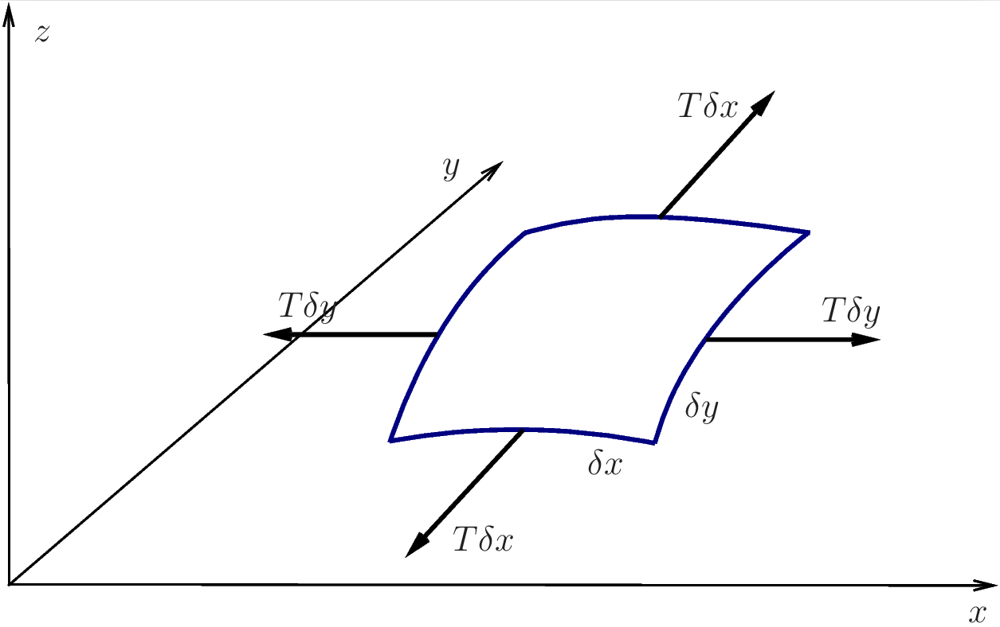

7 Two-dimensional waves
So far we have been discussing the one-dimensional wave equation. We have motivated the equation in terms of a string stretched along the \(x\) dimension and oscillating in the \(y\) dimension. We now want to extend this to higher dimensions.
One way to introduce another dimension would be to let the string vibrate in both the \(y\) and \(z\) dimension. However that would not give anything new. In the small-angle approximation to which we have been working, the oscillations in the \(y\) direction and the oscillations in the \(z\) direction would be independent and we would just end up with two independent one-dimensional wave equations, \[ \partial_t^2 y(x,t) = c^2\partial_x^2 y(x,t)~~\text{ and }~~\partial_t^2 z(x,t) = c^2\partial_x^2 z(x,t). \]
Instead we will introduce the second dimension by going from the string stretched in the \(x\) dimension to a membrane stretched in both the \(x\) and \(y\) dimensions. It will vibrate in the \(z\) direction. This toy example of a vibrating membrane will give us the two-dimensional wave equation, which of course appears in many other applications as well.
You find content related to this lecture in the textbooks:
7.1 Two-dimensional wave equation
Consider an infinite two-dimensional membrane of homogeneous density \(\rho\) (mass per unit area, measured in \(kg/m^2\)). In the equilibrium state, it is flat and coincides with the \((x,y)\) plane in \(\mathbb{R}^3\). We assume that it is stretched to a tension \(T\) (force per unit length, measured in \(N/m\)). This means that for any line on the surface of the membrane, the part of the membrane on one side of the line exerts a force \(T\) (per unit length of the line) on the other part of the membrane (on the other side of the line), and the direction of the force is perpendicular to the line.
The perturbed membrane may be described as a time-dependent surface \(z=z(x,y,t)\) in \(\mathbb{R}^3\), where \(z(x,y,t)\) is the vertical (in the \(z\) direction) displacement of the membrane at point \((x,y)\) and time \(t\). To derive the equation of motion, we consider a small element of the membrane of size \(\delta x\) and \(\delta y\) in \(x\) and \(y\), as shown in Figure 7.1.

We assume that there is only transverse motion of the membrane and that the partial derivatives \(\partial_x z\) and \(\partial_y z\) are small: \(\vert\partial_x z\vert \ll 1\) and \(\vert\partial_y z\vert \ll 1\). Almost the same arguments as those in Section 1.2 lead to the conclusion that the vertical component of the force is a sum of two terms: \(T \delta y \, \partial_x^2 z \, \delta x\) (coming from the tension forces that are nearly parallel to the \(x\)-axis in Figure 7.1) and \(T \delta x \, \partial_y^2 z \, \delta y\) (coming from the tension forces that are nearly parallel to the \(y\)-axis in Figure 7.1). So, Newton’s equation of motion (\(ma=F\)) yields \[ (\rho \, \delta x \, \delta y)\partial_t^2 z = T \delta y \, \partial_x^2 z \, \delta x + T \delta x \, \partial_y^2 z \, \delta y. \tag{7.1}\] Dividing this by \(\delta x \, \delta y\) and \(\rho\), we get the governing equation for the membrane: \[ \partial_t^2 z = \frac{T}{\rho} \left( \partial_x^2 \, z + \partial_y^2 \, z\right) \tag{7.2}\] or, equivalently, \[ \partial_t^2 z - c^2 \nabla^2 z = 0, \quad c=\sqrt{\frac{T}{\rho}}. \tag{7.3}\] Here \(c\) in the wave speed and \(\nabla^2\) is the Laplace operator: \[ \nabla^2= \partial_x^2 + \partial_y^2. \tag{7.4}\] Sometimes, the Laplace operator is also denoted by \(\Delta\) (i.e. \(\Delta = \nabla^2 = \partial_x^2 + \partial_y^2\)). Eq. 7.3 is the two-dimensional wave equation. Written in terms of the Laplace operator it easily generalises to any higher dimension.
7.2 Energy of membrane
The energy density of the membrane is \[ \mathcal{E}(x,y,t)=\frac{\rho}{2}(\partial_t z)^2+\frac{T}{2}\left((\partial_x z)^2+(\partial_y z)^2\right), \tag{7.5}\] where the term involving the density \(\rho\) is the kinetic energy density \(\mathcal{E}_K\) and the term involving the tension \(T\) is the potential energy density \(\mathcal{E}_V\). The latter we could write in vector notation as \(\mathcal{E}_v=T|\underline{\nabla} z|^2/2\) where \(\underline{\nabla}z\) is the gradient of \(z\).
To check that Eq. 7.5 is a good expression for the energy density, we check that \(\mathcal{E}\) satisfies a conservation equation. So we calculate \[\begin{split} \partial_t\mathcal{E} &=\rho\, (\partial_t z) ( \partial_t^2 z) +T\,(\partial_t\partial_x z)(\partial_x z)+T\,(\partial_t\partial_y z)(\partial_y z) \\ &=T\, (\partial_t z) (\partial_x^2z+\partial_y^2z) +T\,\left((\partial_t\partial_x z)(\partial_x z)+\,(\partial_t\partial_y z)(\partial_y z)\right) \\ &=-\partial_x\left(-T(\partial_xz)(\partial_tz)\right)-\partial_y\left(-T(\partial_xz)(\partial_tz)\right), \end{split} \tag{7.6}\] where for the second equality we have used the wave equation. We introduce the two-dimensional energy flux density vector \(\underline{\mathcal{F}}=(\mathcal{F}_x,\mathcal{F}_y)\) with \[ \mathcal{F}_x =-T(\partial_xz)(\partial_tz),~~~~ \mathcal{F}_y=-T(\partial_yz)(\partial_tz). \tag{7.7}\] In terms of this we have derived the conservation equation \[ \partial_t\mathcal{E} =-\underline{\nabla}\cdot\underline{\mathcal{F}}. \tag{7.8}\]
To understand how this two-dimensional conservation equation leads to energy conservation let us look at the energy in a region \(R\) in the \((x,y)\) plane. The energy in this region is given by \[ E=\int\!\!\int_{R} \mathcal{E}\, dA. \tag{7.9}\] Here \(dA=dx \, dy\) is the area element. The rate of change in the energy is then \[\begin{split} \frac{dE}{dt} &=\int\!\!\int_{R} \partial_t\mathcal{E} dA =- \int\!\!\int_{R} \underline{\nabla}\cdot\underline{\mathcal{F}}\, dA \\ &=-\int_{\partial R} \mathcal{F}\cdot\underline{n}\, ds. \end{split} \tag{7.10}\] For the last equality we used the divergence theorem. \(\underline{n}\) is the outward unit normal to the boundary \(\partial R\) of the region \(R\) and \(ds\) is the line element on \(\partial R\). So again we see that the change of energy in a region is equal to the net flow of energy into the region.
7.3 Travelling plane waves
A 2D wave is a plane wave if \(z(x,y,t)\) varies only in one spatial direction, say, parallel to a constant unit vector \(\underline{n}=(n_x,n_y)\) (and \(z(x,y,t)\) is constant in the direction perpendicular to \(\underline{n}\)). This means that \[ z(x,y,t)=f(\underline{n}\cdot\underline{x} -ct)=f(n_x x+n_y y -ct) \tag{7.11}\] describes a plane wave travelling with wave speed \(c\) in the direction of vector \(\underline{n}\).
Let’s verify that Eq. 7.11 is a solution of the 2D wave equation. We have \[\begin{split} \partial_t^2 \, z &=\partial_t^2 \, f(\underline{n}\cdot\underline{x} -ct)=f''(\underline{n}\cdot\underline{x} -ct) \, c^2, \\ \partial_x^2 \, z &=\partial_x^2 \, f(\underline{n}\cdot\underline{x} -ct)=f''(\underline{n}\cdot\underline{x} -ct) \, n_x^2, \\ \partial_y^2 \, z &=\partial_y^2 \, f(\underline{n}\cdot\underline{x} -ct)=f''(\underline{n}\cdot\underline{x} -ct) \, n_y^2. \end{split} \tag{7.12}\] Hence, \[\begin{split} &\partial_t^2 \, z -c^2 \, \left(\partial_x^2 \, z + \partial_y^2 \, z\right)\\ =&c^2 \, f''(\underline{n}\cdot\underline{x} -ct)\left(1- n_x^2-n_y^2\right)=0 \end{split} \tag{7.13}\] because \(\underline{n}\) is a unit vector, i.e., \(n_x^2 + n_y^2=1\).
Because the wave equation is linear, any superposition of plane wave solutions is also a solution.
The harmonic plane wave corresponds to the choice \(f(s)=e^{iks}\), so that \[ z(x,y,t)=e^{ik(\underline{n}\cdot\underline{x} -ct)}= e^{i(\underline{k}\cdot\underline{x} -\omega(\underline{k})t)}, \tag{7.14}\] where \(\underline{k}=k \, \underline{n}\) is called the wave vector. We have the dispersion relation \(\omega(\underline{k})=c \, \vert \underline{k}\vert\).
7.4 Higher dimensions
By writing our equations in vector notation, we can see that they work in any dimension. So the n-dimensional wave equation for a real-valued function \(z:\mathbb{R}^n\times\mathbb{R}\to\mathbb{R}\) or a complex-valued function \(z:\mathbb{R}^n\times\mathbb{R}\to\mathbb{C}\) is \[ \partial_t^2 z(\underline{x}, t) = c^2\,\nabla^2 z(\underline{x}, t). \tag{7.15}\]
Its energy density is \[ \mathcal{E} = \frac{T}{2}\left(\frac{1}{c^2}|\partial_t z|^2+|\underline{\nabla}z|^2\right). \tag{7.16}\] It satisfies the conservation equation \[ \partial_t\mathcal{E} =-\underline{\nabla}\cdot\underline{\mathcal{F}} \tag{7.17}\] where the energy flux is \[ \underline{\mathcal{F}} = -T\mathop{Re}\left(\partial_tz\,\underline{\nabla}z\right) \tag{7.18}\]
According to the \(n\)-dimensional divergence theorem, the rate of change of the energy in an \(n\)-dimensional region \(R\subset\mathbb{R}^n\) with \(n-1\)-dimensional boundary \(\partial R\) is \[\begin{split} \frac{dE}{dt}&=\int_R\partial_t\mathcal{E}\,dV = -\int_R\underline{\nabla}\cdot\underline{\mathcal{F}}\,dV\\ &=\int_{\partial R}\underline{\mathcal{F}}\cdot\underline{n}\,dS. \end{split} \tag{7.19}\]
The wave equation has plane wave solutions \[ z(\underline{x},t) = f(\underline{n}\cdot\underline{x}-ct) \tag{7.20}\] for any choice of \(f:\mathbb{R}\to\mathbb{R}\) or \(f:\mathbb{R}\to\mathbb{C}\).
When you study Electromagnetism you will meet an even nicer way of writing these equations in terms of \(n+1\)-dimensional space-time vectors and tensors.